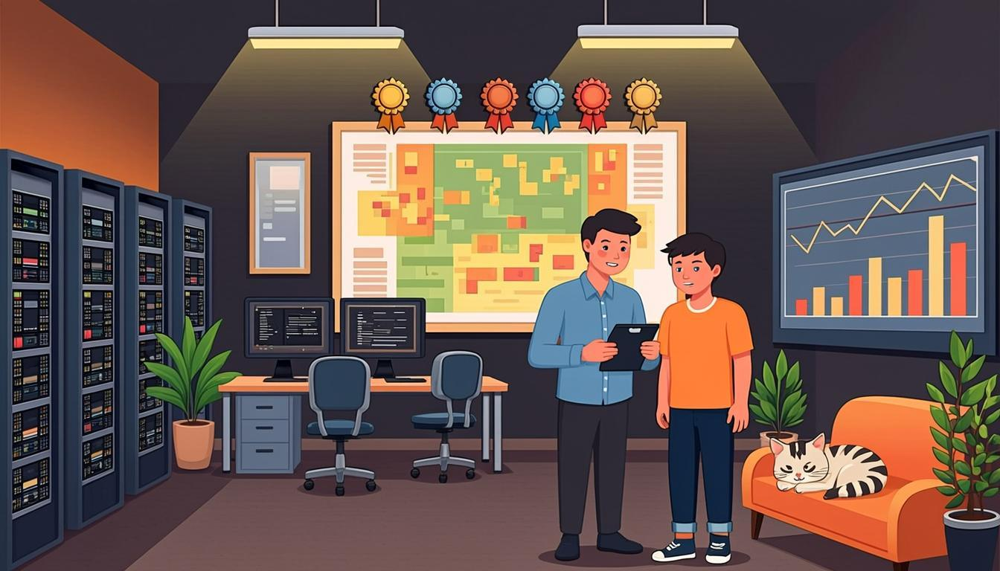

Warm-up
10 minpipelines · industry · processes🎧 Listen to the questions
❓ Three questions — click a card to open the sentence starters
Listening — The Studio Tour
12 minaudio + comprehension
🧩 Before you listen: 10 key words
Click a word — a definition and an example will open. The Russian gloss is there to check your understanding. Listen to the recording of all ten words.
🎧 Track 1 — The Studio Tour
🌍 Extension — GDC: talks from real studios
From the yearly plan: GDC on YouTube ↗
Pick any 15–20 minute talk and watch the first 8 minutes. Note 3 passive or process phrases you hear (is designed, was created, are built) — say what each one moves to the front of the sentence.
Reading — How a Build Ships (internal wiki)
10 minpipeline + passive spottingHarbour Lights Wiki · Page 21: How a Build Ships
Category: production · Owner: everyone, that is the point · Status: updated nightly, like the builds
Grammar check: this page is written in the passive on purpose. be + V3 = the process is the news; by … appears only when the doer matters.
1. Code is written and is reviewed by at least one other person.
2. Builds are compiled nightly on the build farm — nobody presses a button, it is done automatically.
3. Smoke tests are run at 7:00, and the results are posted to the channel before the first coffee.
4. Critical bugs are fixed before anything new is added.
5. Playtests are run every Thursday, and real players are invited — the sofa was bought for them.
6. The release is announced on the store page, and the patch notes are written by the whole team.
🌍 Extension — The Guardian: Games industry
From the yearly plan: theguardian.com/games ↗
Pick an industry news piece. Retell it in 4 sentences — at least 2 in the passive: the studio was acquired; 60 people were laid off; the game was delayed…
Grammar — Passive: Present & Past
10 minbe + V3 + 4 exercisesPASSIVE — be + V3
- Present: am/is/are + V3 — Builds are compiled nightly. The store page is updated every Friday.
- Past: was/were + V3 — The trailer was released last month. The bugs were fixed overnight.
- When? The process matters more than the person. News, reports, pipelines, rules — they all live in the passive.
- by appears only when the doer matters: The level was designed by our lead artist.
🚫 The trap — what the passive is not
- No be, no passive: the game released yesterday → the game was released yesterday.
- V3, not V2: is builded → is built (build–built–built).
- Intransitive verbs have no passive at all: the bug disappeared — full stop. You cannot "disappear it".
- Don't sprinkle by everywhere: most real passives have no agent — the build was rolled back (by whom? doesn't matter).
⚙️ Mini-table — active → passive, studio edition
| Active — the doer matters | Passive — the process matters |
|---|---|
| We compile builds nightly. | Builds are compiled nightly. |
| Our lead artist designed the level. | The level was designed by our lead artist. (her name is the news) |
| Somebody found the bug. | The bug was found. (nobody knows or cares who) |
| They release patches every month. | Patches are released every month. |
| Mila fixed the critical bug. | The critical bug was fixed by Mila. (praise is the news) |
🎬 Video — Present and Past Passives: The Grammar Gameshow (Episode 16)
🔊 Shadowing — speak along with the speaker
Track A — the passive present, Track B — the passive past. Listen to a sentence → repeat it out loud in the pause. Two loops per track.
Grammar → Speaking — the main section of the lesson
15 mingoal: processes that sound like a studio🎙 Round 1 — Your Studio Tour 8 stops
Give a 90-second tour of your (real or dream) studio — 8 passive sentences: builds are compiled here; playtests are run every Thursday; the trailer was released last month; coffee is drunk by the litre. Two stops must use by — two people who actually matter.
🎙 Round 2 — The Newsroom flip the headlines
Turn 5 active headlines into passive ones and back — 90 seconds, out loud: The studio laid off 60 people → 60 people were laid off. A player found the speedrun bug → the speedrun bug was found by a player. Keep the meaning identical — only the spotlight moves.
⚡ Speed Drill — flip the spotlight
Open a card and instantly say the passive version — or explain why the passive is impossible. Then say which version the studio would really use, and why.
Writing — the release process
5 min6 sentences, 40–80 wordsModel answer — open it after your own version
How a release ships at Harbour Lights. Code is reviewed by a second person, and builds are compiled nightly. Smoke tests are run at seven, and the results are posted before coffee. Critical bugs are fixed first, while new features are kept waiting. Playtests are run every Thursday, and real players are invited. Finally, the release is announced on the store page, and the patch notes are written by the whole team. Nobody is a hero here — the pipeline is.
Homework
≤ 30 minutes in total🧑🏫 Teacher notes
Goal: the student describes processes in the passive without translating — is/are + V3 and was/were + V3 become the default voice for pipelines, reports and news. Class opens with the Module Test 7 review; the modals are not abandoned, they return as modal passives next lesson.
Suggested flow: Warm-up: three questions that force is-prepared / is-overlooked / was-shocked → Listening: the tour; second pass copies one present-passive and one past-passive sentence word for word → Reading: the wiki page is passive on purpose; the Guardian extension retells news with half passive sentences → Grammar: the mini-table's "who is the star?" rows decide everything; the Gameshow episode lands the traps (is builded, was happened) → Speaking: Round 1 (the tour) is the fluency drill — 8 passives, two with by; Round 2 flips headlines both ways → Writing: the release process is the artefact the student reads aloud at the start of Lesson 30.
Success criteria: Round 1 — 8 passive sentences, no missing be, exactly two by-agents; Round 2 — 5 successful flips including one "impossible" (intransitive); the description — 6 sentences, 4+ passives, no is builded.
Error pocket: missing be (the game released) · V2 for V3 (is builded / was wrote) · passive with intransitives (was happened, was disappeared) · by-overuse · questions that drop be (when released the trailer? → when was the trailer released?).
Threads: Mila the intern returns in Lesson 31 (delegation day — she is given real tasks); the policy deck mentioned in the tour becomes Lesson 30's listening; the cats' feeding schedule ("fed twice a day, not to be disturbed") is canon now and will appear in the release report.